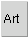
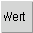
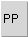
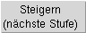
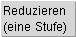

| Name der Grundkenntnis | |
| Art der Fertigkeit: A: Ausnahmefertigkeit G: Grundfertigkeit S: Standardfertigkeit |
 |
| FP, die beim Verlernen der Fertigkeit frei werden | |
| Quellenbuch aus der die Waffenfertigkeit stammt. |
Im unteren Fenster sind die erlernbaren Grundkenntnisse aufgelistet.
Diese Fertigkeiten können mittels einmaligem Anklicken "Steigern" erlernt werden.
| Name der Grundkenntnis | |
| Art der Fertigkeit: A: Ausnahmefertigkeit G: Grundfertigkeit S: Standardfertigkeit |
|
| FP-Kosten zum Erlernen der Grundkenntnis | |
| Quellenbuch aus der die Waffenfertigkeit stammt. |
| Der Erfolgswert der gelernten Waffenfertigkeiten kann duch (einamliges) Anklicken von "Steigern" um 1 erhöht werden. | |
| Der Erfolgswert einer bereits gesteigerten Waffenfertigkeit kann um 1 vermindert werden, indem "Reduzieren" einmalig angeklickt wird | |
| Eine Waffenfertigkeit, die auf ihrem Minimalwert beherrscht wird, kann mittels "Verlernen" verlernt werden. | |
| Name der Fertigkeit | |
| Aktueller Erfolgswert der Fertigkeit |  |
| Eventuell erworbene Praxispunkte in einer Fertigkeit |  |
| Art der Fertigkeit: A: Ausnahmefertigkeit G: Grundfertigkeit S: Standardfertigkeit |
|
| FP-Kosten, um den Erfolgswert um 1 zu steigern. |  |
| FP, die eine Reduktion des EW der Fertigkeit um 1 Punkt bringt (nur für Korrekturen!) |  |
| FP, die ein Verlernen der Fertigkeit bringt. Voraussetzung: Die Fertigkeit wir auf ihrem minimalem Erfolgswert beherrscht. (nur für Korrekturen!) | |
| Falls die Fertigkeit aus einem Regional-Quellenbuch stammt, so wird hier die entsprechende Region angegeben |
Im unteren Fenster werden die Waffenfertigkeiten angezeigt, die aufgrund bereits erworbener Grundkenntnisse erlernbar sind.
| Name der Fertigkeit | |
| Erfolgswert, mit dem die Fertigkeit unmittelbar nach dem Erlernen beherrscht wird. | |
| Art der Fertigkeit: A: Ausnahmefertigkeit G: Grundfertigkeit S: Standardfertigkeit |
|
| Voraussetzungen, zum Erlernen der Fertigkeiten | |
| Falls die Fertigkeit aus einem Regional-Quellenbuch stammt, so wird hier die entsprechende Region angegeben. |